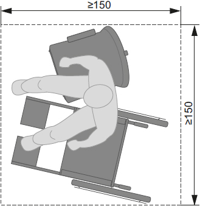
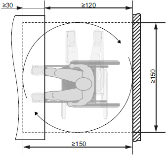
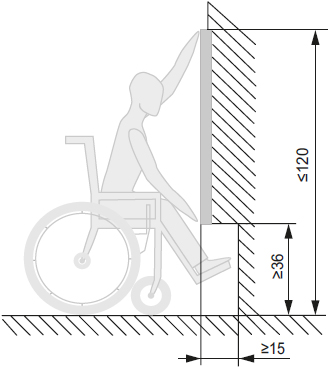
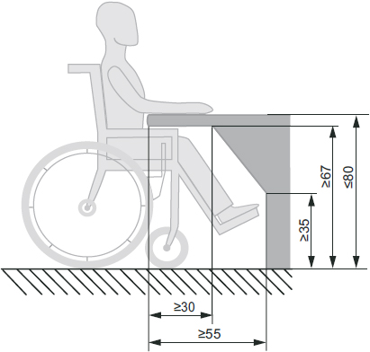

(1) Beim Einrichten und Betreiben von Pausenräumen, Pausenbereichen und Bereitschaftsräumen sowie von Einrichtungen zum Hinlegen und Ausruhen für schwangere Frauen und stillende Mütter sind die besonderen Belange von Beschäftigten mit Behinderungen zu berücksichtigen. Je nach Auswirkung der Behinderung ist insbesondere auf Wahrnehmbarkeit, Erkennbarkeit, Erreichbarkeit und Nutzbarkeit zu achten.
(2) Wahrnehmbarkeit und Erkennbarkeit nach Absatz 1 sind gegeben, wenn Kennzeichnungen für Beschäftigte mit Sehbehinderung z. B. visuell kontrastierend gestaltet sind. Auch für blinde Beschäftigte ist das Zwei-Sinne-Prinzip anzuwenden, z. B. mit einer taktil erfassbaren Kennzeichnung an der Tür. Zusätzlich ist ein Mobilitätstraining möglich.
(3) Wahrnehmbarkeit und Erkennbarkeit der Funktion sowie Nutzbarkeit von Bedienelementen (z. B. Zapfstelle, Schalter für Beleuchtung und Lüftung) sind gegeben, wenn sie für Beschäftigte mit Sehbehinderung z. B. visuell kontrastierend und für blinde Beschäftigte z. B. taktil erfassbar gestaltet sind. Zusätzlich ist ein Mobilitätstraining möglich.
(4) Nutzbarkeit nach Absatz 1 ist in Bezug auf die Übermittlung von Informationen (z. B. die Erreichbarkeit im Bereitschaftsfall, Alarmierung im Notfall) gegeben, wenn für Beschäftigte mit einer Seh- oder Hörbehinderung das Zwei-Sinne-Prinzip angewendet wird.
(5) Für Beschäftigte, die einen Rollstuhl benutzen, ist für den Zugang eine lichte Durchgangsbreite der Tür gemäß Absatz 13 Anhang A1.7: Ergänzende Anforderungen zur ASR A1.7 "Türen und Tore" zu gewährleisten. Schrägrampen zum Ausgleich von Höhenunterschieden sind gemäß Absatz 3 Anhang A1.8: Ergänzende Anforderungen zur ASR A1.8 "Verkehrswege" zu gestalten.
(6) Für Rollatoren, Rollstühle oder Gehhilfen von Beschäftigten sind gegebenenfalls zusätzliche Flächen (z. B. Bewegungsflächen für das Umsetzen, Abstellflächen) erforderlich. Für das Umsetzen vom Rollstuhl auf eine andere Sitzgelegenheit ist eine Bewegungsfläche von mindestens 1,50 m x 1,50 m erforderlich (siehe Abbildung 1).

Abb. 1: Mindestgröße der Bewegungsfläche für das Umsetzen (Maße in cm)
(7) In Abhängigkeit von den individuellen Erfordernissen der Beschäftigten mit Behinderungen sind gegebenenfalls über Absatz 6 hinausgehende zusätzliche Flächen notwendig, z. B. für persönliche Assistenz, Assistenzhund (z. B. Blindenführhund), medizinische Hilfsmittel oder Elektrorollstuhl.
(8) Für Beschäftigte, die einen Rollstuhl benutzen, muss die Bewegungsfläche bei Nichtunterfahrbarkeit von Ausstattungselementen mindestens 1,50 m x 1,50 m und bei Unterfahrbarkeit mindestens 1,50 m x 1,20 m betragen (siehe Abbildung 2).

Abb. 2: Überlagerung von Stell- und Bewegungsflächen bei Unterfahrbarkeit von Ausstattungselementen (Maße in cm)
(9) Werden Einrichtungen für das Wärmen und Kühlen von Lebensmitteln benutzt, bestimmen die individuellen Erfordernisse der Beschäftigten mit Behinderungen die Maßnahmen zur barrierefreien Gestaltung. Dies kann für Beschäftigte, die einen Rollstuhl benutzen, z. B. bei frontaler Anfahrt durch Unterfahrbarkeit der Nutzungsfläche und Berücksichtigung der Greifhöhe erreicht werden (siehe Abbildungen 3 und 4). (ASR A4.2 Abschnitt 4.1 Absatz 12)

Abb. 3: Greifhöhe (Maße in cm)
(10) Für Beschäftigte, die einen Rollstuhl benutzen, müssen Nutzungsflächen unterfahrbar sein (siehe Abbildung 4).

Abb. 4: Unterfahrbarkeit Nutzungsfläche (Maße in cm)
(11) Für kleinwüchsige Beschäftigte müssen Tische und Sitzgelegenheiten nutzbar sein, z. B. durch Anpassen der Sitzhöhe sowie Bereitstellen einer Fußstütze und Aufstiegshilfe.
(12) Unabhängig von der Anzahl der Beschäftigten ist ein Pausenraum oder Pausenbereich zur Verfügung zu stellen, wenn die Art einer Behinderung dies erfordert. Das kann der Fall sein, wenn Beschäftigte mit psychischer Behinderung, Echter Migräne oder Tinnitus eine Rückzugsmöglichkeit benötigen. Sollen Pausenräume außerhalb der festgelegten Pausenzeiten für andere Zwecke genutzt werden, sind die Bedarfe von Beschäftigten mit Behinderungen nach einer Rückzugsmöglichkeit vorrangig zu berücksichtigen. (ASR A4.2 Abschnitt 4.1 Absätze 2 und 3, Abschnitt 4.2 Absatz 1)
(13) Pausenräume und Pausenbereiche sollen unabhängig von der Entfernung innerhalb von 5 Minuten erreichbar sein (zu Fuß, mit Hilfsmitteln oder mit betrieblich zur Verfügung gestellten Verkehrsmitteln). (abweichend von ASR A4.2 Abschnitt 4.1 Absatz 5)
(14) Müssen Liegen von Beschäftigten mit Behinderungen genutzt werden, bestimmen deren individuelle Erfordernisse die Ausstattung der Liege, z. B. Höhenverstellbarkeit, Breite, Auflage, Griffe. (ASR A4.2 Abschnitt 5 Absatz 5)